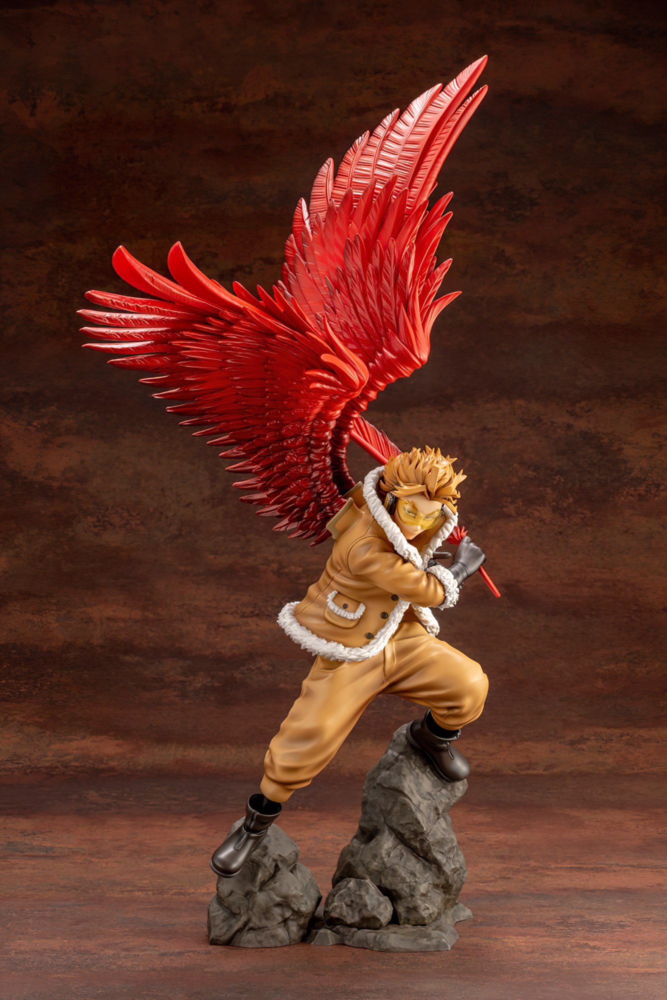
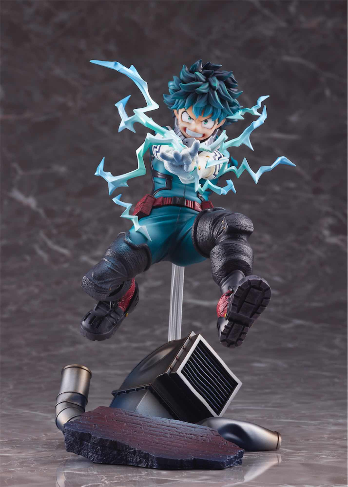

Figuras
Las figuras de acción de anime son objetos de colección que permiten a los fans llevar a casa a sus personajes favoritos y mostrar su amor por sus series y franquicias preferidas.
Desde figuras asequibles hasta piezas de alta gama, hay opciones para todos los gustos y presupuestos en el mundo de las figuras de acción de anime.
 